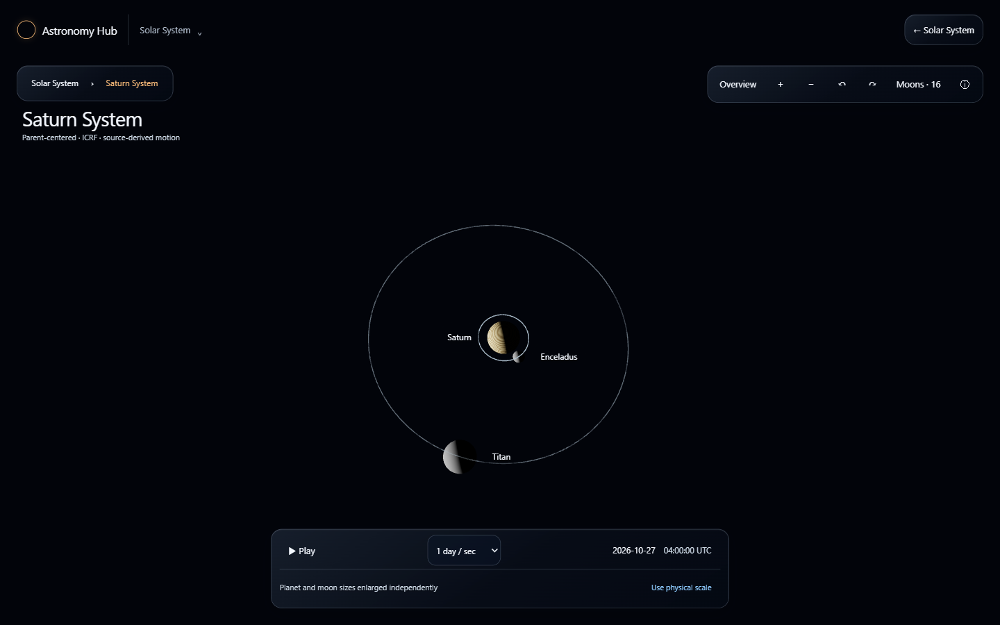
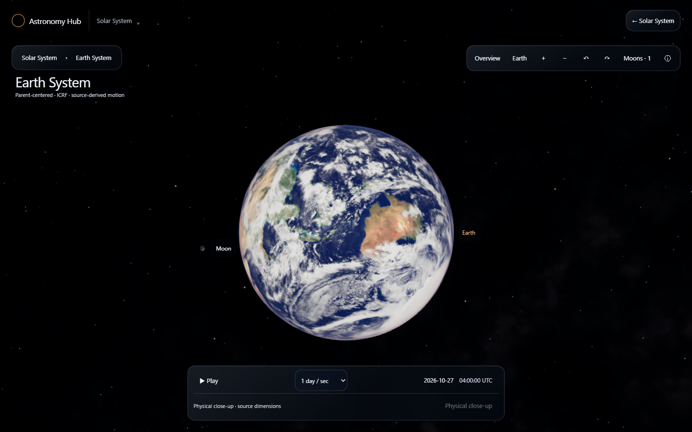
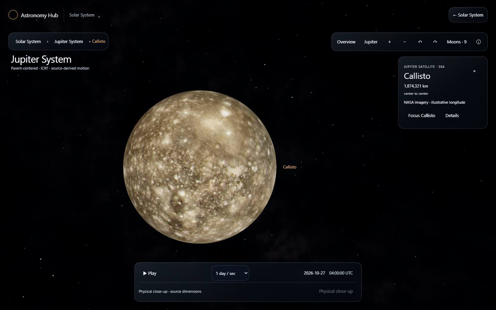
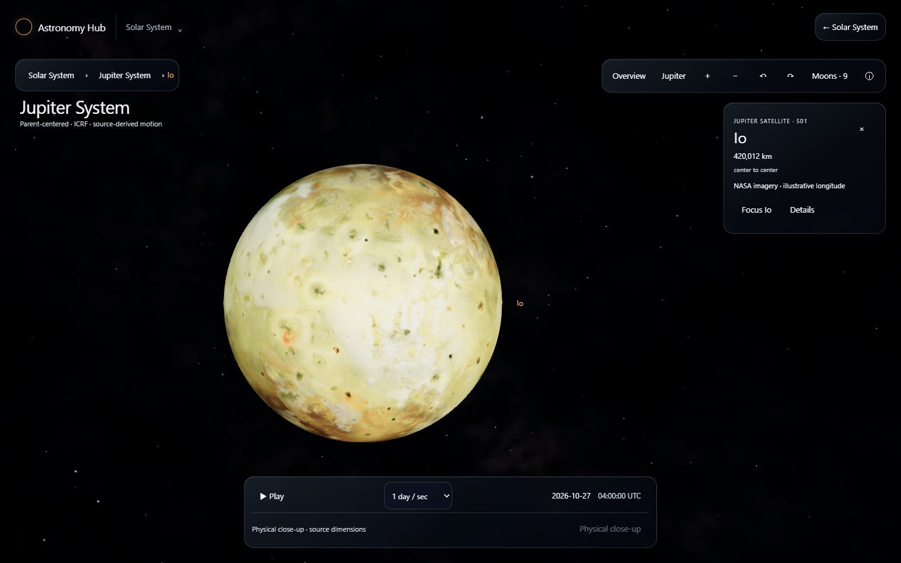
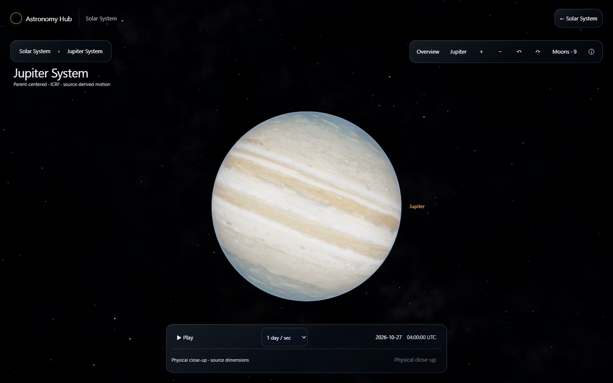
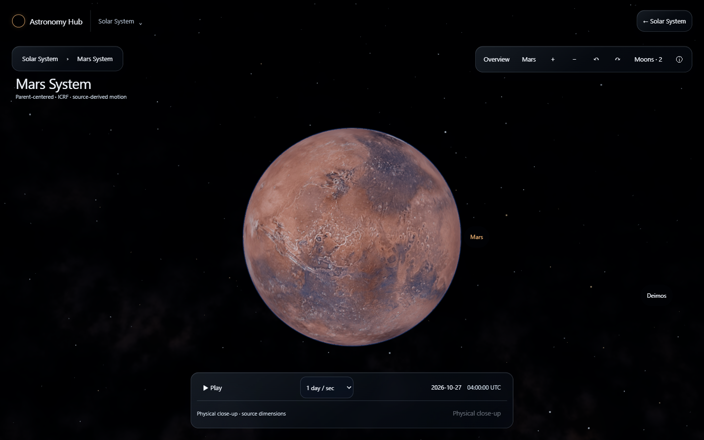
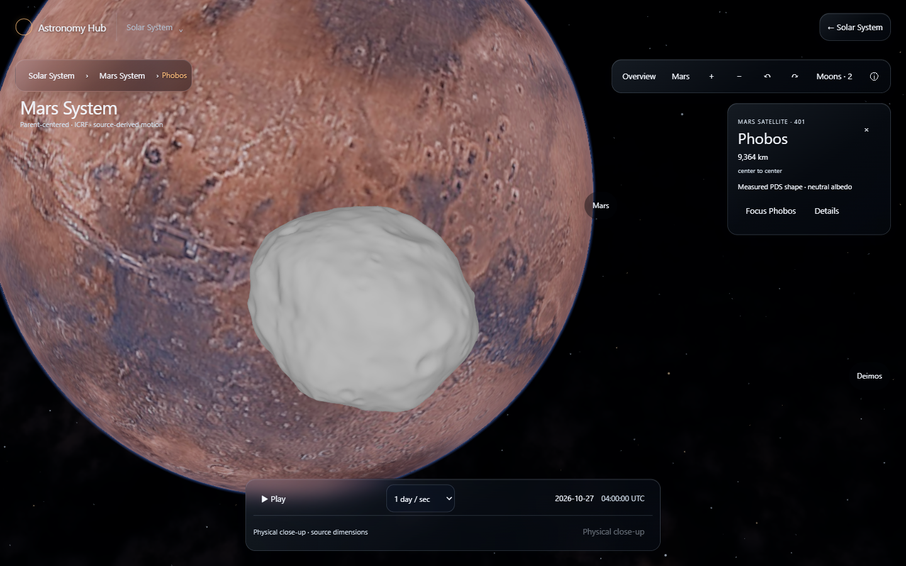
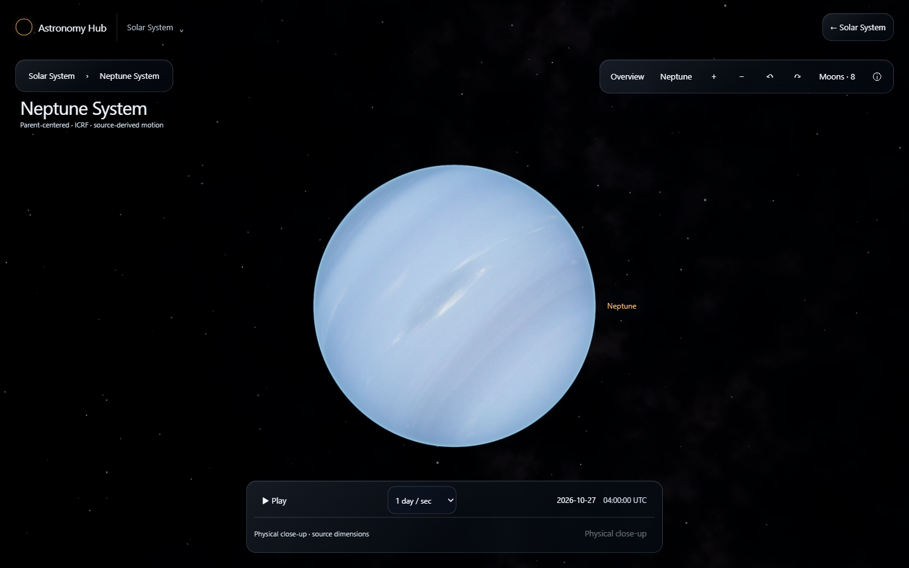

Solar 2.3 — planetary systems
Actual application captures at 2026-10-27 04:00 UTC. Before: qualified Solar 2.2 branch head 767ec130. After: this Solar 2.3 candidate. Each overview uses its implementation's framing at the same epoch and viewport; source centers are never rearranged. Original owner screenshots were not attached to this session; the running rejected implementation was captured before replacement.
Desktop, portrait and landscape all use the owner's Windows Edge / NVIDIA RTX 3060. Mobile dimensions are desktop emulation, not a physical iPhone test. NASA moon maps retain original geography but mostly lack qualified meridian registration. Titan shows haze. Phobos/Deimos are measured shapes with neutral albedo. Green engineering checks do not replace owner visual acceptance.
Saturn · 1440x900

Before · rejected implementation After · owner acceptance pending
After · owner acceptance pending
1440x900-earth-earth1440x900-earth-moon · close-up
1440x900-jupiter-callisto · close-up
Before · rejected implementation
After · actual available source imagery or shape 1440x900-jupiter-europa · close-up
1440x900-jupiter-ganymede · close-up
1440x900-jupiter-io · close-up
Before · rejected implementation
After · actual available source imagery or shape 
1440x900-jupiter-jupiter1440x900-mars-deimos · close-up

1440x900-mars-mars1440x900-mars-phobos · close-up
Before · rejected implementation
After · actual available source imagery or shape 
1440x900-neptune-neptune1440x900-neptune-triton · close-up
Before · rejected implementationAfter · actual available source imagery or shape 1440x900-saturn-enceladus · close-up
Before · rejected implementationAfter · actual available source imagery or shape 1440x900-saturn-saturn1440x900-saturn-titan · close-up
Before · rejected implementationAfter · actual available source imagery or shape 1440x900-uranus-ariel1440x900-uranus-miranda · close-up
Before · rejected implementationAfter · actual available source imagery or shape 1440x900-uranus-oberon1440x900-uranus-titania · close-up
Before · rejected implementationAfter · actual available source imagery or shape 1440x900-uranus-umbriel1440x900-uranus-uranus390x844-earth-moon · close-up
Before · rejected implementationAfter · actual available source imagery or shape 390x844-jupiter-callisto390x844-mars-deimos390x844-neptune-triton · close-up
Before · rejected implementationAfter · actual available source imagery or shape 390x844-saturn-enceladus390x844-saturn-saturn390x844-saturn-titan · close-up
Before · rejected implementationAfter · actual available source imagery or shape 390x844-uranus-oberon844x390-earth-moon · close-up
Before · rejected implementationAfter · actual available source imagery or shape 844x390-jupiter-callisto844x390-mars-deimos844x390-neptune-triton · close-up
Before · rejected implementationAfter · actual available source imagery or shape 844x390-saturn-enceladus844x390-saturn-saturn844x390-saturn-titan · close-up
Before · rejected implementationAfter · actual available source imagery or shape 844x390-uranus-oberonActual user-operated journey 1; Windows Edge / NVIDIA.Actual user-operated journey 2; Windows Edge / NVIDIA.Actual user-operated journey 3; Windows Edge / NVIDIA.